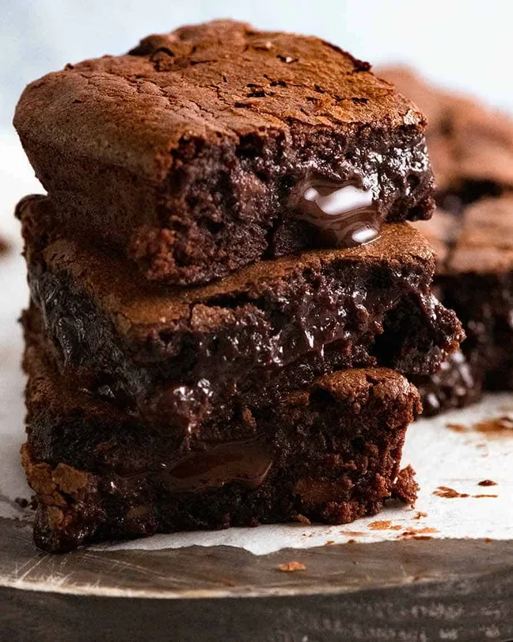

Brownies

Simple brownie recipe
The secret to a really great brownie is using both melted chocolate AND cocoa powder, plus butter instead of oil (because butter has way better flavour than oil). The combination of these plus minimal flour, just enough to make a barely-set batter, and brown sugar rather than white (for extra moisture and chewiness) is what will deliver that perfect rich, fudgy brownie you’ve been dreaming about.
Ingredients
- 200 g unsalted butter
- 200 g dark chocolate chips or melts/discs
- 175 g brown sugar
- 3 large eggs
- 1 tsp vanilla extract
- 75 g plain flou
- 30 g cocoa powde
- Pinch of salt
Steps
- Preheat oven to 180°C/350°F (160°C fan-forced). Spray a 20cm/8" square tin with oil or grease with butter. Line with baking paper/parchment paper with overhang
- Melt chocolate and butter – Place butter and chocolate chips in a heatproof bowl, microwave in 30 second bursts (takes me 1m 30 sec) until melted. Stir until smooth.
- Sugar and eggs – Add sugar and vanilla, mix, then add eggs and mix well until smooth and molten.
- Dry ingredients – Add flour, cocoa and salt and stir until smooth. Stir in chopped chocolate, pour into pan.
- Bake 24 minutes for really gooey in the centre, 28 minutes for fudgey but still very moist (my favourie, shown in video & photos), 32 minutes for moist fudge-cake-like
- Rest for 10 minutes before lifting out of the pan (they are fragile when hot). Allow to cool for at least 20 minutes before cutting. For really neat slices, refrigerate for 30 minutes, or even overnight, but always eat at room temp for fudgy perfection!
home